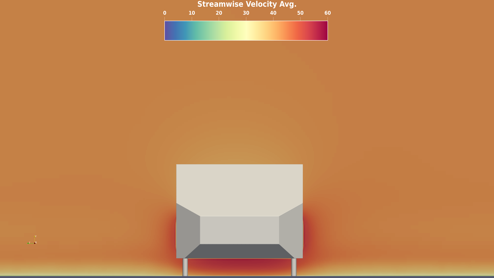
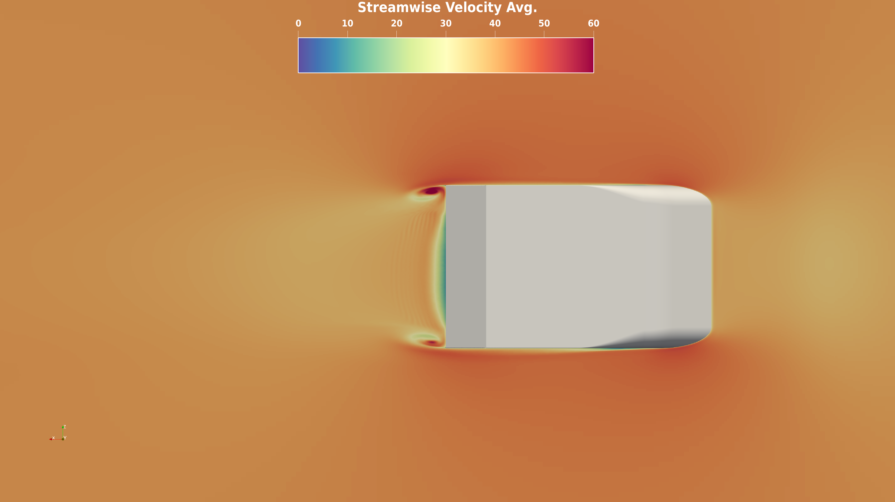

WindsorML Dataset¶
The WindsorML dataset is a publicly available dataset in Hugging Face licensed as CC BY-SA 4.0 and distributed separately to MLSimKit. It is a collection of high-fidelity CFD simulations showing different geometric variants of a body for automotive aerodynamics modeling. Please see the Hugging Face dataset for additional details.
Downloading the training data (170G)¶
You can download the data required for the training tutorials using Python with the huggingface_hub package:
pip install huggingface_hub
Then use this Python code to download the dataset:
from huggingface_hub import snapshot_download
snapshot_download(
repo_id="neashton/windsorml",
repo_type="dataset",
local_dir="/path/to/dataset",
allow_patterns=[
"run_*/windsor_*.stl",
"run_*/images/*",
"run_*/boundary*.vtu",
"run_*/force_mom_*.csv"
]
)
Replace /path/to/dataset to your own directory.
The Slices and KPI tutorials have steps to download only the necessary data for each. The entire dataset is ~8TB and includes high-resolution meshes not required for training.
Understanding the dataset¶
The dataset contains 355 cases, each representing a unique geometry variant. The cases are organized into separate folders named run_0 to run_354, one for each simulation case.
The variability in geometry across the 355 cases leads to a diverse set of flow physics, making this dataset well-suited for machine learning model development.
Within each run folder is a standard set of files:
run_0/
├── boundary_0.vtu
├── force_mom_0.csv
├── force_mom_varref_0.csv
├── geo_parameters_0.csv
├── images
│ ├── pressureavg
│ │ ├── *.png
│ ├── rstress_xx
│ │ ├── *.png
│ ├── rstress_yy
│ │ ├── *.png
│ ├── rstress_zz
│ │ ├── *.png
│ ├── velocityxavg
│ │ ├── *.png
│ └── windsor_0.png
├── volume_0.vtu
├── windsor_0.stl
└── windsor_0.stp
windsor_<run #>.stl- The surface geometry definition in STL formatboundary_<run #>.vtu- Simulation results on the surfacevolume_<run #>.vtu- Volumetric simulation outputsforce_mom_<run #>.csv- Time-averaged force and moment coefficientsforce_mom_varref_<run #>.csv- Time-averaged force and moment coefficients using unique reference area per geometryimages/- Folder containing slice images through the volumewindsor_<run #>.png- Image of the windsor body (see below)
{kind=link}
The slice images show simulation variables like pressure and velocity captured on 2D planes along the X, Y and Z axes. Multiple views are available.
Slice Images Views¶
The images folder within each case contains subfolders organizing the slice images by simulation output variable.
Within each variable folder (e.g. pressureavg, velocityxavg), there are multiple image sets showing different sliced views through the volume.
The main image sets are:
Z-Axis Slices
Filename pattern: view1_constz_*.png
Slices along the Z-axis, showing the XY-plane at different Z positions. Useful for visualizing the flow as it passes over the geometry from front to back.

X-Axis Slices
Filename pattern: view2_constx_*.png
These are slices along the X-axis, showing the YZ-plane at different X positions.
{kind=link}
Y-Axis Slices
Filename pattern: view3_consty_*.png
Slices along the Y-axis, showing the XZ-plane. Gives a top-down view at different heights.
{kind=link}